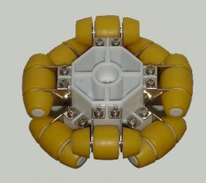
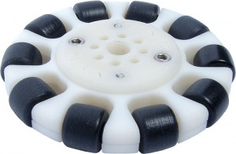
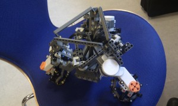
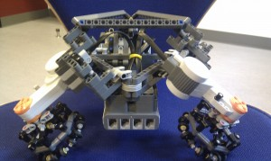

Monthly Archives: March 2011
Ground unit construction and structure ideas: implementing omniwheels
| March 30, 2011 | Posted by Guillaume under Building, Ground robots, Ideas, Refining the project, Testing |
Comments off
|
Thinking about the project in itself, we focused on the ground units in the flock and their movements. In order to follow the commands it has been given, a ground unit must turn on itself and then move forward an indicated direction (and eventually make a last rotation to be well oriented with the leader). This sequence of three different steps can obviously be executed in one single move; but without considering the obstacle avoidance part, the split way seems to be a reliable first approach. However, we wanted to suppress one of those constraint so as to make the flock units movements much more easier to establish. This way we tried to get rid of the “rotation” part in order to gain time: thus we came out with the idea of using omniwheels. It’s something we already thought about for our last project and agreed that it would be worthy to implement for this one.
Now that you’re aware of the reasons that led us over here, it’s maybe about time to tell you some more about the omniwheels (the name in itself can give you clues about its function but as this isn’t a very common system, we’ll spend some time on giving explanations). Before giving any theory, a visual contact with the device should give you some hints and satisfy your curiosity.
|  |  |  |
| Omniwheel design on www.holonomicwheel.com | TETRIX 3″ Omni Wheel found on www.legoeducation.us | Excentric design of omniwheel found in the LEGO Lab |
|---|
{kind=link}
{kind=link}
So, as you have noticed, an omniwheel (or polywheel or even holonomic wheel) is a wheel composed of little wheels all around the circumference of the big one. The axis of those little wheels are tangent to the circumference of the big one and they are all included in the same plan (thus, they should all be orthogonal to the axis of the big wheel). This architecture confers “normal wheel properties” to the omniwheel but on top of that, the omniwheel can slide along its axis of rotation (or along the projection of this axis on the surface the wheel is used on).
Nevertheless, they are some different architectures according to the creativity of the builders as you can see on the last picture on right above (the axis of the “little wheels” are not orthogonal with the axis of the omniwheel). A omniwheel isn’t omnidirectional in itself but using several of them can turn a robot into a omnidirectional car. And this was the point of our work…
 |
 |
 |
The omniwheel above is the one we came out with. We only used LEGO pieces, it is composed of 16 little wheels and as you can see the structure isn’t that massive. After that we tackled the robot construction, knowing that we wanted to use 3 of those omniwheels. The two main problems were to work with the angles so as to respect the LEGO construction conventions (the axis of the omniwheels must cross in one point and their center must describe an equilateral triangle) and have a robust structure for the robot.
Those two video show how the robot is moving and it was our first tests so from this point, we had to find out what could and should be upgraded. Namely, if you watch closely when the robot stops, it tends to balance and doesn’t here but could fall in another situations (different speed, different slope, etc). Another notable point is that the robot “bends itself” when moving or turning: this is because the fixations and the structure are not strong enough (and this was the most annoying problem). So from this point, we tried to lower the robot and widen the motors so as to provide a better stability; and tried to reinforce the structure without overweighting it (despite of the fact that we can’t neglect the stability even if it’s at the expense of the robot’s weight).
|  |  |
 |
{kind=link}
{kind=link}
This way, we crafted a new robot much more stable (and quite heavier too) but the balance and the solidity were no longer problems. Something that need to be mentioned is that we inclined the omniwheels instead of installing them perpendicular to the floor (according to our experiments, this difference doesn’t seem to alter the robot’s behaviour and movements from any other “regular omnidirectionnal” robot).
Testing the drone with third-party applications
| March 25, 2011 | Posted by Michael under Ideas, Smartphone, Testing |
Comments off
|
Trying to connect to the AR.Drone
When you buy the AR.Drone, the first thing you may want to do before developing your own programs for it is to test the UAV itself, straight out of the box. The easiest way to proceed is to own an iDevice, i.e.an iPhone/iPad/iPod Touch, download the free application AR FreeFlight made by Parrot, connect to the drone and simply run the app. It will enable you to pilot the UAV while streaming the video feed from both cameras directly to the phone screen.
As far as we are concerned, we do not use such devices, and we only plan on piloting the drone with a computer or an Android phone. Unfortunately, a technical detail prevent us so far from doing it as easily as it can be done with an iPhone. The AR.Drone requires an ad-hoc connection which cannot be established with our Android phone, since it is still not software-wise supported by Google. It is however possible to do that with the Parrot Software Development Kit, as long as you manage to circumvent the WiFi connection issue.
Many applications for the AR.Drone are already available on the Android market (see our Links and Downloads page), however most of them require that you root your smartphone prior to using it. Rooting a smartphone usually void your warranty (it is yet possible to unroot it), and furthermore you need to apply a patch to enables ad-hoc connections. It is completely doable and we even tried it. However the process is tedious and is not easily explainable to anyone. Since we want to develop a system that can be started by anybody as long as the material is there, this is not an option we would like to keep.
What is efficiently working so far
On a HTC Desire smartphone
Fortunately, Shellware developed a little PC program that reverses the connection process. Instead of having the phone connecting to the hotspot generated by the drone, it makes the drone connect to the hotspot enabled by the phone.
To achieve that is easy thanks to the AR Assist infrastructure WiFi program (running on a WiFi-enabled computer) that tells the drone which hotspot it has to connect to. Then, one only has to start the AR Pro Android application (running on an Android phone) to pilot the UAV as it would be done on an iPhone.
{kind=link}
Screenshot of the AR.Pro interface running on a HTC Desire. The screen is mainly covered with the frontal camera view, while on the top left is located the vertical camera view. Joysticks enable throttle, roll, pitch and yaw, while buttons take care of automatic maneuvers. Altitude, quality of WiFi connection and battery information are displayed on the screen. Note that the vertical size of the camera view has been scaled to fit the screen resolution.
The last annoying thing with this solution is that you need a PC around and it takes around one minute to configure. Unless you then install a patch on the drone (that can be made through AR Pro, even if we did not succeed in doing so), you then have to follow those same steps every time you reboot the drone.
On a laptop
It is also possible to skip the phone layer and pilot the drone directly with the computer. You just need to connect to the drone hotspot with your computer through WiFi, and then run for instance the program WD ARDrone that uses Windev 16.
{kind=link}
Screenshot of the WD ARDrone application running on Windows. This is what the UAV sees with its horizontal camera.
This program is really reliable and enables video recording and piloting with a specific controller, like a joystick or an XBox 360 controller – as long as you map your keyboard keys with your controller buttons. The interface provides the user with information about all navigation data which increases the impression of flying from inside a cockpit. Experimenting piloting commands with a game controller proved to be more accurate and steady than with a smartphone.
The powerful Xpadder software has been used to do the key mapping with our game controller.
First experiments
| March 24, 2011 | Posted by Guillaume under Building, Drone, Ground robots, Testing |
Comments off
|
Before going on a coding spree and working on the project itself, we wanted to run some tests just to see if the drone could track a robot on the floor and follow it. But in order to do this, we didn’t want to code anything so we used a subterfuge: instead of using a tracking feature of the drone, we investigated its stabilization process. Indeed, in order to stay on the same spot when it doesn’t receive any instructions, the drone uses its own camera pointing at the ground, analyzes the images and try to stay above the pattern it’s matching at this moment.
In our experiments, we took a ground with an almost uniform surface (this way, it would be hard for the drone to find a landmark to stay stable), made the drone take off, and then we placed the drone above a LEGO land unit with a disk on it (the results seemed to be better with the disk). At this point, the land unit would be a landmark for the drone and according to our theories, if the drone doesn’t receive any instructions and the land unit move, the drone should follow the car.
The results are better than what we were expecting, you can see by yourself on the video above… Notice that the right smartphone remotely commands the drone (via WiFi), the left one remotely commands the ground unit (via Bluetooth) and that nobody’s touching at the drone or its remote control during all the “tracking” phase.
Same idea… different approach
| March 23, 2011 | Posted by Michael under Ideas, Refining the project |
Comments off
|
While browsing the web looking for potential examples, demonstrations and applications of the main idea behind our project, we stumbled on some good videos. It appears that, so far, few people managed to have at least the AR.Drone following one moving object on the ground, let alone an autonomous robot vehicle. We still did not find anyone using the UAV to help robots maintain a formation – it does certainly not mean that it has not been done or tried though.
Among the rare examples found, the one that is closest to our project has been done at the NASA Langley Research Center. It features a remote-controlled car moving on a flat surface and followed in real-time by the very same AR.Drone we use.
| Demonstration of the autonomous tracking of a ground vehicle that is remote-controlled at the NASA Langley Research Center. |
|---|
This is one of the tasks we have to implement in order to fulfill our project. However, as you may see in the above video, the way of having it working efficiently is different from the idea we wish to develop. There is image analysis but not achieved by the drone alone; the system operates indeed with multiple surrounding and stationary cameras that do motion tracking of both the drone and the vehicle. It works thanks to a Vicon motion capture system that enables such a smooth result with a powerful software.
LARSS (Langley Aeronautics Research Summer Scholars) students worked on this project at this research center last year, helped by NASA scientists. According to a comment, they chose to use many cameras instead of the one embedded on the drone because the latter was not good enough resolution-wise to provide the required accuracy. It may be due to them working with an early prototype though. It will in any case be a good challenge for us to try to achieve what they couldn’t and find ways to get around these problems. We have more time than they had for that, and we can benefit from a still greater community of developers using this platform.
It is anyway great to see that researchers of such well-known places are interested in this kind of projects. It also shows that there is still work that need to be done in this field.
Learn more about it:
The Parrot AR.Drone was put on display at the last NASA Aviation Unleashed Conference, featuring the above-mentioned project, while they also did other experiments involving autonomous movement and obstacle avoidance with the drone. An interesting article regarding the Aviation Unleashed Conference and forecasts about autonomous aviation may also be found here.
Getting started
| March 22, 2011 | Posted by Guillaume under Drone, Ground robots, Ideas, Refining the project, Smartphone, Tasks |
Comments off
|
First things first, we had to take the time to find out all the equipment we would need, all the objectives we wanted to reach and therefore all the tasks we had to achieve so as to complete the project properly. Nevertheless we obviously can’t predict everything right now, but we think that the board below gives a rather accurate overview of the project in itself. This board represents our current objectives, so it might not be the last time you see it on this blog section.

Giving you more details about the project’s ideas and mechanism should be a good start. The basic idea of the project is to gather a flock of land units in real-time. This flock would have a leader and all the other land units would have to keep in formation. Now the interesting point: all the other robots following the leader would be “dumb” robot as we called them in the way that they do not have any sensor mounted on their vehicle. The question being was to find a solution in order to balance this lack of sensor, this absence of communication between those machines and the environment in which they progress.
This question brings us to the interesting part of the project: the use of a drone. Indeed, the drone we’re using has two cameras on board (on looking straight forward and the other one pointing at the ground). The camera looking down will do some pattern recognition, locate every vehicle and the movement of each land unit will be adjusted so as to keep the formation. Namely, the drone will have to stay above the flock so as a first idea, it will stay above the leader (an autonomous or remote-controlled unit).
So far, we established a list of all we need (that you will probably see in our incoming videos relating our tests) and split the work in different parts which would be:
- Pattern recognition: how to match patterns, which patterns to use, which platform to use for the image analysis;
- Communication : we need to create an interface using the Bluetooth for the computer-land units layer and WiFi for the computer-drone layer;
- Algorithmic: which strategy would be the most suitable for the trajectory of the land units and the position of the drone;
- Design: making the robots ergonomic, stable, easily movable (for example, should we go on a omniwheel architecture or not…).
Getting some inspiration…
| March 21, 2011 | Posted by Michael under Refining the project |
Comments off
|
The AR.Drone is quite a recent device, given that it became available for sale last August (2010). It nonetheless did not prevent lots of developer to eagerly jump on the opportunity of programming this new hi-tech gadget. Soon the web began to offer lots of inspirational ideas about the possibilities provided by the quadricopter.
Considering the project we are about to make and the time it will take, it was deemed necessary to have a comprehensive look at what has already been done, in order :
- to start getting a good idea of what is clearly possible to achieve with the Drone, and what might be more complicated
- to use pre-existing ideas to develop our own
- to make sure that our project has not already been entirely done elsewhere
- to look at other approaches used to solve parts of our problem
- to get feedback and experience from people who have spent more hours working on the device than us
- to, in general terms, know the state of the art regarding the development of applications with such a device
A good start may be to have a look at some official videos provided by Parrot, the French company that build the AR.Drone. Despite to commercial aspect of those videos, it is a good way to have a first feeling of the assumed possibilities of the device. More videos and information can be found on the official webpage.
| Indoor flight demonstration | Outdoor flight demonstration |
|---|
Since image analysis appealed to us in the first place, and since it is at the same time one of the main fields explored by developers working on this platform (the drone embeds indeed two cameras), we had to have a look on pattern recognition et tag tracking with a drone.
| Object tracking with a computer running an URBI program. | Vertical camera analyzing objects over a desktop. Provide a good impression on the resolution of the camera and its ability to recognize patterns (in fact, the points of interest of an image). |
|---|
The ROS.org website that host the Robot Operating System project is bustling with plenty of new inspirational ideas that involve all kinds of robots – it’s basically an open source meta operating system for robots. Some of them are really good at showing what a drone (not necessarily our AR.Drone) can do with image analysis enabled.
| AR.Drone following a 2D tag using ROS. | Using Kinect (a 3D enabled camera) on a quadricopter to control altitude and avoid obstacles. | Autonomous flight of an UAV using Kinect. |
|---|
The ROS 3D contest page is also worthy to be read, at least for most of the entries. It is mostly related to interfacing robots (not only UAV) with Kinect, the camera made by Microsoft that enables 3D video-caption; however some examples helped us in defining the topic of our master thesis, that will involve a flying device, robots on the ground and image analysis.
At last, but not least, our last discovery is dronehack, a weblog compiling lots of information, news and programs recently published online about the Parrot AR.Drone. We may want to keep an eye on it during the process of our very own project.